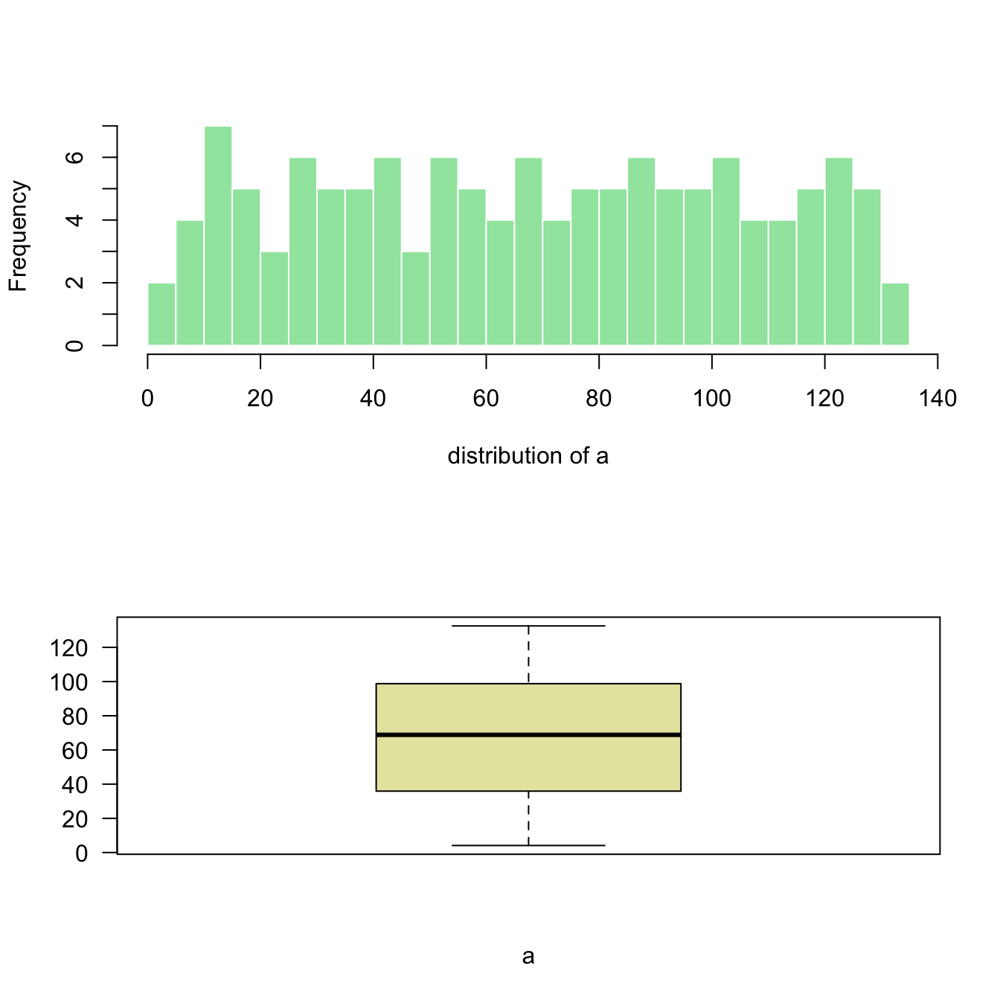
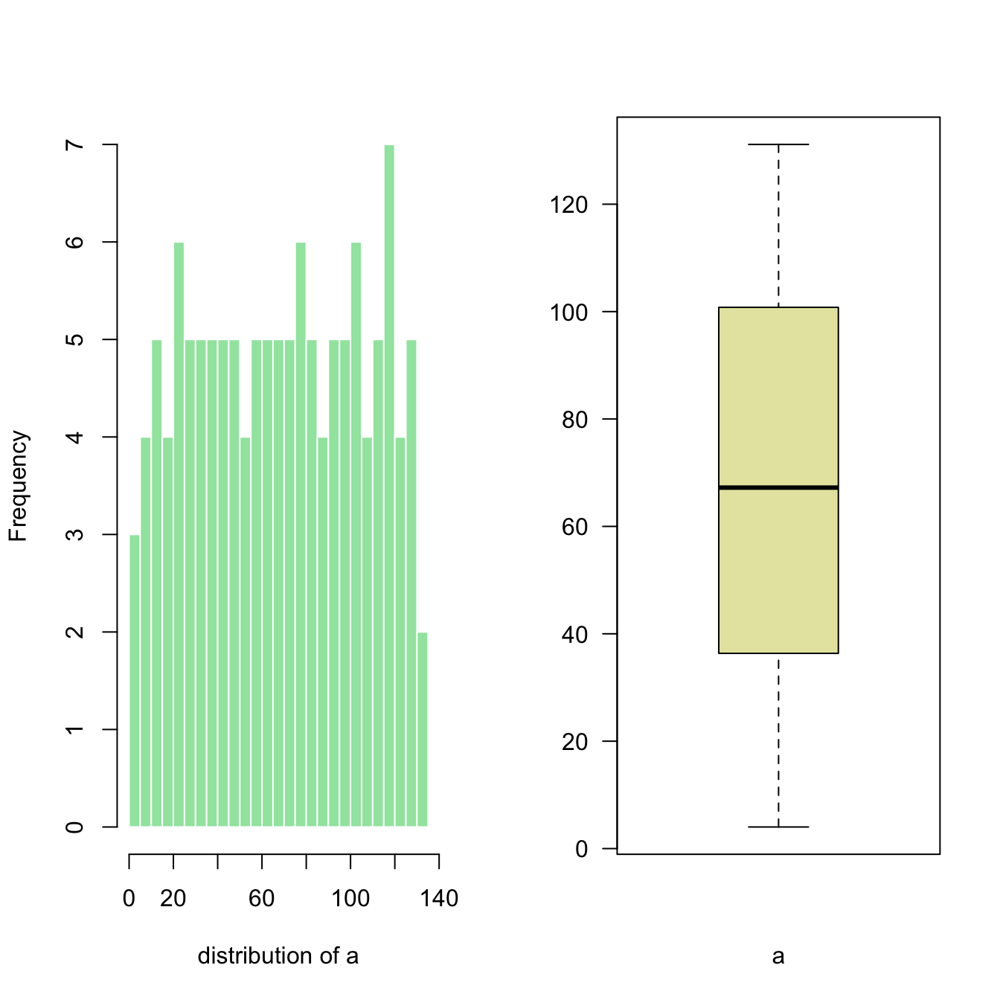
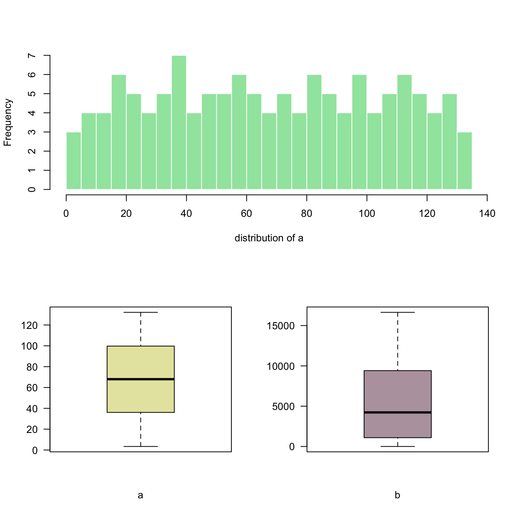
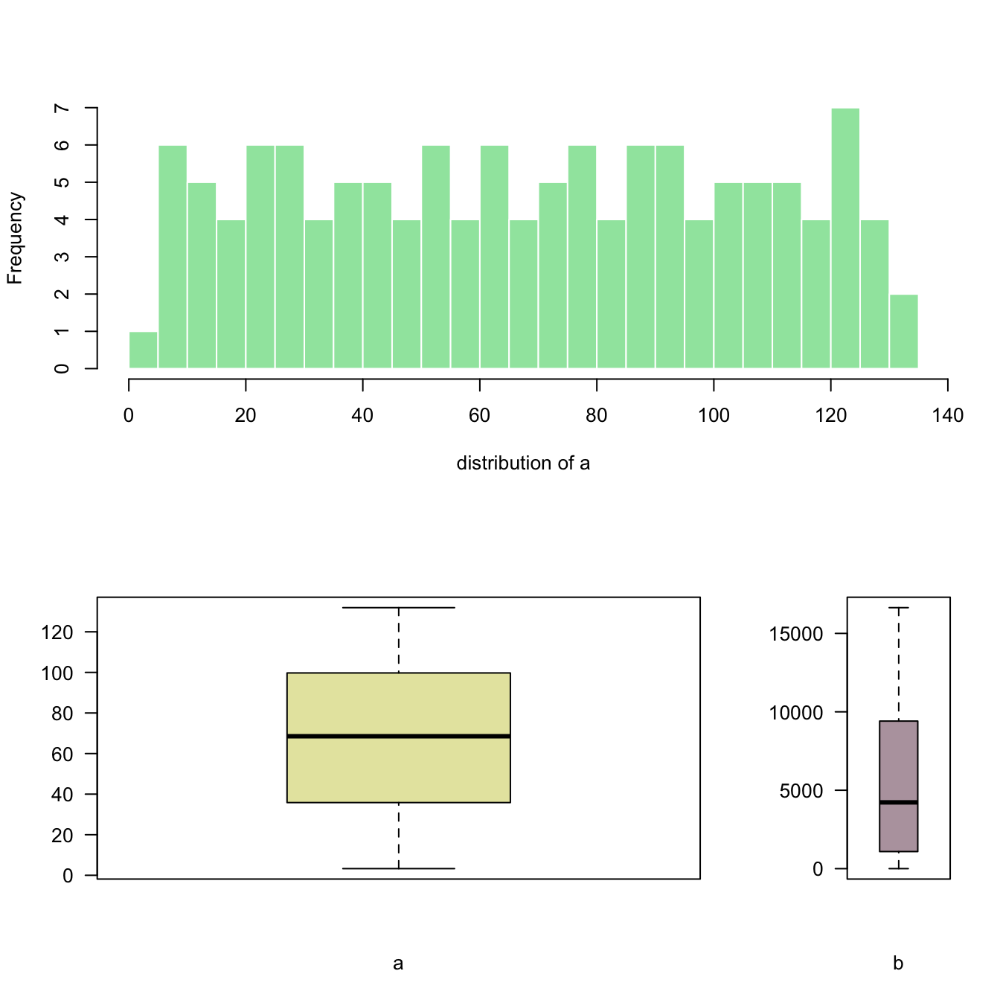

Related chart types

Violin

Density

Histogram

Boxplot

Ridgeline
The layout() function of R allows to split
the plot window in areas with custom sizes. Here are a few examples
illustrating how to use it with reproducible code and explanation.
Layout divides the device up into as many rows and
columns as there are in matrix mat.
Here I create the matrix with
matrix(c(1,2), ncol=1) -> 1 column, 2 rows. This is
what I get in the chart!
Note: this could be done using
par(mfrow=c(1,2)) as well. But this option does not
allow the customization we’ll see further in this post.

# Dummy data
a <- seq(129,1)+4*runif(129,0.4)
b <- seq(1,129)^2+runif(129,0.98)
# Create the layout
nf <- layout( matrix(c(1,2), ncol=1) )
# Fill with plots
hist(a , breaks=30 , border=F , col=rgb(0.1,0.8,0.3,0.5) , xlab="distribution of a" , main="")
boxplot(a , xlab="a" , col=rgb(0.8,0.8,0.3,0.5) , las=2)
Here I create the matrix with
matrix(c(1,2), ncol=2) -> 2 columns, 1 row. This is
what I get in the chart!
Note: if you swap to c(2,1), second chart will
be on top, first at the bottom

# Dummy data
a <- seq(129,1)+4*runif(129,0.4)
b <- seq(1,129)^2+runif(129,0.98)
# Create the layout
nf <- layout( matrix(c(1,2), ncol=2) )
# Fill with plots
hist(a , breaks=30 , border=F , col=rgb(0.1,0.8,0.3,0.5) , xlab="distribution of a" , main="")
boxplot(a , xlab="a" , col=rgb(0.8,0.8,0.3,0.5) , las=2)
matrix(c(1,1,2,3), nrow=2) creates a matrix of 2 rows
and 2 columns. First 2 panels will be for the first chart, the third
for chart2 and the last for chart 3.

# Dummy data
a <- seq(129,1)+4*runif(129,0.4)
b <- seq(1,129)^2+runif(129,0.98)
# Create the layout
nf <- layout( matrix(c(1,1,2,3), nrow=2, byrow=TRUE) )
# Fill with plots
hist(a , breaks=30 , border=F , col=rgb(0.1,0.8,0.3,0.5) , xlab="distribution of a" , main="")
boxplot(a , xlab="a" , col=rgb(0.8,0.8,0.3,0.5) , las=2)
boxplot(b , xlab="b" , col=rgb(0.4,0.2,0.3,0.5) , las=2)
You can custom columns and row proportions with
widths and heights.
Here, widths=c(3,1) means first column takes three
quarters of the plot window width, second takes one quarter.

# Dummy data
a <- seq(129,1)+4*runif(129,0.4)
b <- seq(1,129)^2+runif(129,0.98)
# Set the layout
nf <- layout(
matrix(c(1,1,2,3), ncol=2, byrow=TRUE),
widths=c(3,1),
heights=c(2,2)
)
#Add the plots
hist(a , breaks=30 , border=F , col=rgb(0.1,0.8,0.3,0.5) , xlab="distribution of a" , main="")
boxplot(a , xlab="a" , col=rgb(0.8,0.8,0.3,0.5) , las=2)
boxplot(b , xlab="b" , col=rgb(0.4,0.2,0.3,0.5) , las=2)Related chart types